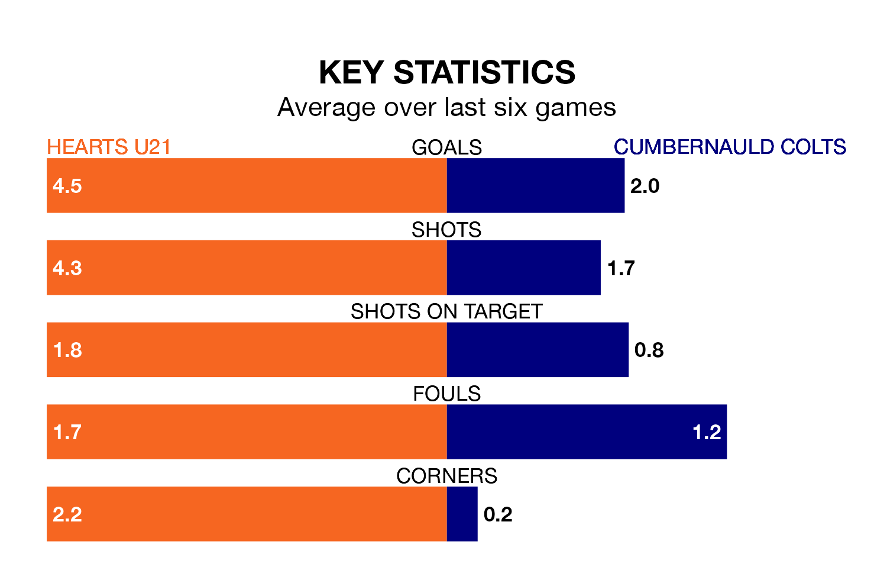

Hearts U21 host Cumbernauld Colts in Friday's late match at the Ainslie Park Stadium looking to bounce back from defeat last time out in Lowland Football League.
Hearts, who sit second in the league after 22 games, fell to a 0-12 home defeat to Edinburgh University on January 5.
They face a Cumbernauld Colts side who also lost their last match, a 2-1 defeat to East Kilbride, and who sit third in the table.
With 66 goals in 22 games so far this season, Hearts U21 are the league's highest scorers with 3.0 goals per game. And they are conceding fewer than average, letting in 25 goals at a rate of 1.1 per game.
Cumbernauld Colts are also above average scorers, with 2.1 goals per game, compared to a league average of 1.7. They have conceded 1.3 goals per game.
Hearts are in fantastic form in Lowland Football League, with five wins and one loss from their last six games.
With three wins and two draws over that period, Colts's form is worse – they have taken 11 points from 18, compared to the hosts' 15.
In the last three years, Hearts U21 and Cumbernauld Colts have played each other on three occasions. Hearts U21 won two of them and Cumbernauld Colts one.
Their last meeting was on August 19, when Hearts U21 won 2-1 away.
Updated: 06:13 (UTC), 18/01/24